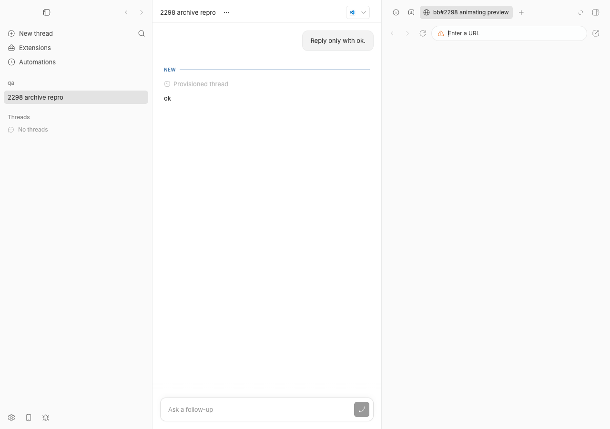
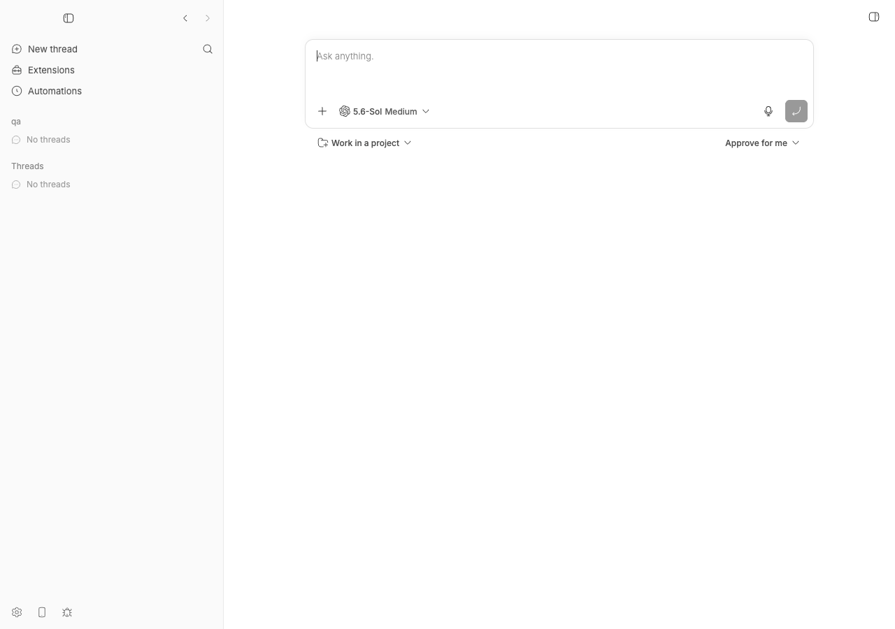
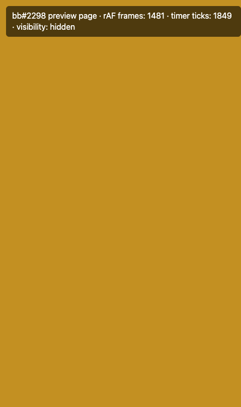
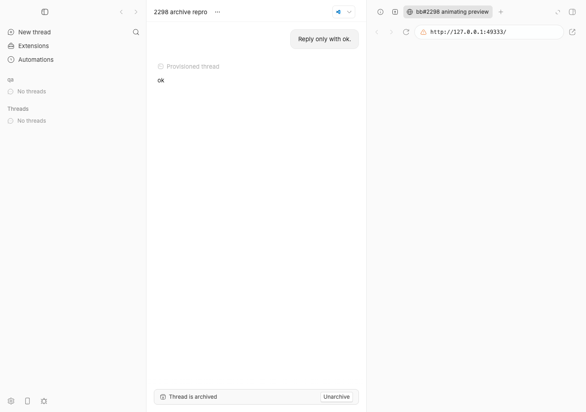

#2298 · Archiving a thread leaves its native browser views alive
Verdict: REPRODUCED · Root-cause confidence: high
1. TL;DR
In the bb desktop app, every in-app browser tab is a native Electron WebContentsView with its own renderer process. Since commit ce006c6ea ("Keep browser views alive across thread switches") those views are deliberately retained when you leave a thread, and are destroyed only when you close the tab, delete the thread, or delete the environment. Archiving was never added to that list: the UI archive action (archiveThreadAndChildrenAction) closes the panes and navigates away but never calls destroyPersistedBrowserViewsForThread, and the archived-changed server broadcast (CLI/SDK/automation archive) is not handled at all, while the equivalent delete paths both call it. Result: the archived thread disappears from the sidebar but its preview renderer (≈90–110 MB RSS in this repro) stays alive in the main process, and the main process never reclaims views on its own (only on window close), so they accumulate until bb restarts.
I reproduced this live in the Electron shell (CDP page targets and renderer PIDs before/after), and with a vitest that fails on 494f66526. One claim in the issue is wrong in a useful way: with this Electron (41.7.0), a retained view is hidden (document.visibilityState === "hidden"), so requestAnimationFrame stops entirely and timers are throttled to ~1 Hz — the retained view is not "drawing at full rate". The cost is the retained renderer process and its memory, not continuous compositing. A two-line fix (mirror delete's teardown in both archive paths) passes the repro test, the surrounding 385 tests, typecheck, and was verified live: after archive the target and renderer are gone, and unarchive + reopen recreates the page lazily from the persisted tab record.
2. Claims vs findings
| Claim from the issue | Status | Evidence |
|---|---|---|
Archiving closes the thread's panes but never destroys the native WebContentsViews its browser tabs created. | Verified | apps/app/src/components/thread/ThreadActionsProvider.tsx 333–350 closes panes and navigates, no teardown. Live: after archive the preview's CDP target EE9EB179 and renderer pid 74883 survive (section 4, steps 6–7). |
| Deleting a thread does destroy them. | Verified | apps/app/src/components/thread/ThreadActionsProvider.tsx 265–280 and apps/app/src/hooks/cache-owners/resource-route-owner.ts 69–82 both call destroyPersistedBrowserViewsForThread. Live: bb thread delete removed the target and killed pid 74883 (step 11). |
| The surviving views keep a renderer process and IOSurface memory. | Verified (renderer + RSS) | Renderer pid 74883 alive after archive with RSS 101–111 MB (renderers-2-after-archive.txt, renderers-3-archived-steady.txt). IOSurface/GPU-helper accounting was not measured (no footprint run); the retained process is sufficient to explain growth. |
| "A hidden view keeps running its page — they keep compositing… it keeps drawing at full rate." | Refuted | Hidden retained view reports visibilityState: "hidden", 0 rAF ticks / 2 s (vs 120 visible) and 3–4 timer ticks / 2 s (vs ~160). Same result in a standalone Electron 41.7.0 probe (hidden-view-probe.out.jsonl). So a retained view does not animate or composite; it holds a process and memory. |
| WindowServer 43–50 % CPU / GPU helper 20–37 % / IOSurface 483→736 MB are caused by this. | Unverified | Not reproducible from one thread; plausible as aggregate cost of many retained renderers (each keeps its compositor frame sink and last surface), but the reporter's numbers include 4 live threads and any hidden-but-live previews. Hidden views do not produce new frames (above). |
| Once archived, the tabs are no longer reachable in the UI, so Cmd+W cannot release them; restart is the only remedy. | Mostly refuted | Opening the archived thread (the "Archived title" toast link, Archived list, search, or its URL) mounts the panel with the browser tab and a hover-revealed "Close tab" button (proved by the accessibility snapshot snapshot-archived-thread-open.txt, line button "Close bb#2298 animating preview"; the tab itself is visible in assets/2298-05-app-archived-thread-open.png). Closing it there destroys the view. It is non-obvious, not impossible. Also views are reclaimed when the window is closed, not only on restart (apps/desktop/src/main.ts 1788–1794). |
The tab record is still present in thread_tabs after archive. | Verified (and correct) | bb thread tabs show after archive returns the browser tab (tabs-2-after-archive.json); direct sqlite3 query in thread_tabs-query.txt. This is desired: it is what lets unarchive recreate the page lazily. |
| Views are not retained unconditionally; counts fell on their own. | Unverified, consistent with code | No timer/pressure policy exists in bb. Views go away only via tab close, thread/environment delete, window close, or renderer crash recovery. The observed decline was most likely tabs closed by the user or a window close/restart. |
Suggested fix: call destroyPersistedBrowserViewsForThread in archiveThreadAndChildrenAction for each archived id; keep tab metadata. | Verified as sufficient for the UI path | Applied in this worktree (section 6): repro test passes, live archive now removes the target. It is not sufficient alone: archive via CLI/SDK/automation reaches the client only as an archived-changed broadcast, which must be handled too (section 5). |
| Cannot be worked around by a plugin. | Verified | BbDesktopBrowserApi is only reachable from the desktop preload inside the app renderer (apps/app/src/lib/bb-desktop.ts 111–113); no plugin SDK surface detaches a view. |
3. Environment
- bb
494f66526(main as of 2026-08-24;origin/mainis the same commit, so nothing later fixes this), package version 0.39.0 (issue also reports 0.39.0). - macOS 26.5.2 (25F84), arm64; Node v22.23.1; Electron 41.7.0 (Chromium 146.0.7680.216) from
apps/desktop; codex-cli 0.149.1 (provider used for the one-word prompt). - Isolated dev instance started from this worktree (
wf_846839f8-f8a-17) withscripts/bb-dev-app current: Apphttp://localhost:14158(Vite), Serverhttp://localhost:22158, Host daemonhttp://127.0.0.1:30158, data dir~/.bb-dev/bb-machines-HOST.getbb.app-checkouts-bb-.claude-worktrees-wf_846839f8-f8a-17-bd99a5562d1d; local host idhost_n9nrg2f8dp, projectproj_5srau8qsn9. Every id, port and pid quoted below is from this run; yours will differ (the steps say where each comes from). The original run of this report used a different worktree/instance; the verifier's run used a third — all three gave the same results. - Electron shell launched with
--remote-debugging-port=49222(repro/launch-desktop.sh, which derives the checkout from its cwd) so page targets could be listed via/json/listand driven withdoobie --connect 49222. Preview page served bypython3 -m http.server 49333fromrepro/page/. - Caveat:
screencaptureis not permitted in this session, so screenshots are CDP captures of (a) the app window DOM — which cannot show the native overlay — and (b) the preview page's own target. The "is the page alive / visible" facts come from CDP target lists, renderer PIDs and in-page counters, not from pixels.
4. Minimal reproduction
4a. Unit-level (fails on 494f66526)
- Save the test below as
apps/app/src/components/thread/ThreadActionsProvider.archive-browser-views.test.tsx(copy in2298/repro/). It registers three persisted browser views (parent, child, unrelated thread) exactly asBrowserTabContentdoes on mount, then (1) clicks the archive action, (2) dispatchesthread-deletedandarchived-changedbroadcasts throughuseDeletedResourceRouteOwner. - Run:
cd apps/app && pnpm exec vitest run src/components/thread/ThreadActionsProvider.archive-browser-views.test.tsx
- Expected: both tests pass (archive detaches the archived threads' tabs). Actual on base: both tests fail. Test 1 — nothing is detached after the UI archive action (
expected [] to deeply equal ['tab_child_preview', 'tab_parent_preview']). Test 2 — thethread-deletedcontrol assertion passes, then thearchived-changedassertion fails (expected [] to deeply equal ['tab_parent_preview']):RUN v4.1.1 /Users/USER/.bb-machines/HOST.getbb.app/checkouts/bb/.claude/worktrees/wf_846839f8-f8a-17/apps/app ❯ @bb/app:isolated src/components/thread/ThreadActionsProvider.archive-browser-views.test.tsx (2 tests | 2 failed) 116ms × UI archive action detaches the views of every archived thread 114ms × server `archived-changed` broadcast (CLI/agent archive) detaches the thread's views like `thread-deleted` does 2ms ⎯⎯⎯⎯⎯⎯⎯ Failed Tests 2 ⎯⎯⎯⎯⎯⎯⎯ FAIL @bb/app:isolated src/components/thread/ThreadActionsProvider.archive-browser-views.test.tsx > #2298 archiving a thread must destroy its persisted browser views > UI archive action detaches the views of every archived thread AssertionError: expected [] to deeply equal [ 'tab_child_preview', …(1) ] - Expected + Received - [ - "tab_child_preview", - "tab_parent_preview", - ] + [] ❯ src/components/thread/ThreadActionsProvider.archive-browser-views.test.tsx:224:38 222| }); 223| 224| expect(mocks.detachments.sort()).toEqual([ | ^ 225| "tab_child_preview", 226| "tab_parent_preview", ⎯⎯⎯⎯⎯⎯⎯⎯⎯⎯⎯⎯⎯⎯⎯⎯⎯⎯⎯⎯⎯⎯⎯⎯[1/2]⎯ FAIL @bb/app:isolated src/components/thread/ThreadActionsProvider.archive-browser-views.test.tsx > #2298 archiving a thread must destroy its persisted browser views > server `archived-changed` broadcast (CLI/agent archive) detaches the thread's views like `thread-deleted` does AssertionError: expected [] to deeply equal [ 'tab_parent_preview' ] - Expected + Received - [ - "tab_parent_preview", - ] + [] ❯ src/components/thread/ThreadActionsProvider.archive-browser-views.test.tsx:256:31 254| changes: ["archived-changed"], 255| }); 256| expect(mocks.detachments).toEqual(["tab_parent_preview"]); | ^ 257| }); 258| }); ⎯⎯⎯⎯⎯⎯⎯⎯⎯⎯⎯⎯⎯⎯⎯⎯⎯⎯⎯⎯⎯⎯⎯⎯[2/2]⎯ Test Files 1 failed (1) Tests 2 failed (2) Start at 09:38:58 Duration 1.52s (transform 498ms, setup 67ms, import 753ms, tests 116ms, environment 515ms)
// @vitest-environment jsdom
//
// Repro for get-bb/bb#2298: archiving a thread leaves its native browser views
// alive. Delete tears the persisted `WebContentsView`s down (both from the UI
// action and from the `thread-deleted` broadcast); archive does neither.
import type { ReactNode } from "react";
import { cleanup, fireEvent, render, screen } from "@testing-library/react";
import { QueryClient, QueryClientProvider } from "@tanstack/react-query";
import type { BbDesktopBrowserApi } from "@bb/desktop-contract";
import type { Thread } from "@bb/domain";
import { afterEach, beforeEach, describe, expect, it, vi } from "vitest";
import {
registerBrowserView,
resetBrowserViewPersistence,
} from "@/components/secondary-panel/browserViewVisibilityCoordinator";
import { useDeletedResourceRouteOwner } from "@/hooks/cache-owners/resource-route-owner";
import { sdk } from "@/lib/sdk";
import { createNoopDesktopBrowserApi } from "@/test/bb-desktop-test-utils";
import {
ThreadActionsProvider,
useThreadActions,
} from "./ThreadActionsProvider";
const mocks = vi.hoisted(() => ({
closePanesForThreads: vi.fn(),
detachments: [] as string[],
dialogOnClose: vi.fn(),
dialogOnOpen: vi.fn(),
dialogOnOpenChange: vi.fn(),
mutation: vi.fn(),
navigate: vi.fn(),
}));
vi.mock("react-router-dom", async (importOriginal) => {
const actual = await importOriginal<typeof import("react-router-dom")>();
return { ...actual, useNavigate: () => mocks.navigate };
});
vi.mock("jotai", async (importOriginal) => {
const actual = await importOriginal<typeof import("jotai")>();
return { ...actual, useSetAtom: () => mocks.closePanesForThreads };
});
vi.mock("@/components/dialogs/ThreadDeleteDialog", () => ({
ThreadDeleteDialog: () => null,
}));
vi.mock("@/components/dialogs/ThreadRenameDialog", () => ({
ThreadRenameDialog: () => null,
}));
vi.mock("@/components/ui/app-toast", () => ({
appToast: {
dismiss: vi.fn(),
error: vi.fn(),
loading: vi.fn(),
message: vi.fn(),
success: vi.fn(),
warning: vi.fn(),
},
}));
vi.mock("@/hooks/mutations/thread-state-mutations", async (importOriginal) => {
const actual =
await importOriginal<
typeof import("@/hooks/mutations/thread-state-mutations")
>();
return {
...actual,
useDeleteThread: () => ({ isPending: false, mutate: mocks.mutation }),
useMarkThreadRead: () => ({ mutate: mocks.mutation }),
useMarkThreadUnread: () => ({ mutate: mocks.mutation }),
usePinThread: () => ({ mutate: mocks.mutation }),
useUnpinThread: () => ({ mutate: mocks.mutation }),
useUpdateThread: () => ({ isPending: false, mutate: mocks.mutation }),
};
});
vi.mock("@/lib/sdk", () => ({
sdk: {
threads: {
archiveAll: vi.fn(),
childSummary: vi.fn(),
unarchive: vi.fn(),
},
},
}));
vi.mock("@/hooks/useDialogState", () => ({
useDialogState: () => ({
onClose: mocks.dialogOnClose,
onOpen: mocks.dialogOnOpen,
onOpenChange: mocks.dialogOnOpenChange,
target: null,
}),
}));
vi.mock("@/hooks/useRouteState", () => ({
useRouteState: () => ({ projectId: null, threadId: null }),
}));
// Stand in for the Electron preload: record which tab ids get `detach`ed,
// which is what destroys the native WebContentsView (desktop-browser-view.ts
// `destroyEntry` -> `webContents.close()`).
const recordingDesktopBrowser: BbDesktopBrowserApi = {
...createNoopDesktopBrowserApi(),
detach(tabId) {
mocks.detachments.push(tabId);
},
};
vi.mock("@/lib/bb-desktop", async (importOriginal) => {
const actual = await importOriginal<typeof import("@/lib/bb-desktop")>();
return { ...actual, getDesktopBrowserApi: () => recordingDesktopBrowser };
});
function makeThread(overrides: Partial<Thread> = {}): Thread {
return {
archivedAt: null,
createdAt: 1,
deletedAt: null,
environmentId: "env_test",
id: "thr_parent",
lastReadAt: null,
latestAttentionAt: 1,
originKind: null,
originPluginId: null,
parentThreadId: null,
pinnedAt: null,
projectId: "proj_test",
providerId: "codex",
sectionId: null,
sourceThreadId: null,
status: "idle",
title: "Thread with a browser preview",
titleFallback: null,
updatedAt: 1,
visibility: "visible",
...overrides,
};
}
function ArchiveButton({ thread }: { thread: Thread }) {
const { archiveThreadAndChildren } = useThreadActions();
return (
<button type="button" onClick={() => archiveThreadAndChildren(thread)}>
Archive
</button>
);
}
function RouteOwnerProbe({
onHandler,
}: {
onHandler: (handler: ReturnType<typeof useDeletedResourceRouteOwner>) => void;
}) {
onHandler(useDeletedResourceRouteOwner());
return null;
}
function renderProvider(children: ReactNode) {
return render(
<QueryClientProvider client={queryClient}>
<ThreadActionsProvider>{children}</ThreadActionsProvider>
</QueryClientProvider>,
);
}
let queryClient: QueryClient;
beforeEach(() => {
queryClient = new QueryClient({
defaultOptions: {
mutations: { retry: false },
queries: { retry: false },
},
});
vi.mocked(sdk.threads.archiveAll).mockResolvedValue({
archivedThreadIds: ["thr_parent", "thr_child"],
ok: true,
});
mocks.closePanesForThreads.mockReturnValue({
focusedRoute: null,
removedAny: false,
});
// Simulate what BrowserTabContent does on mount: each open browser tab's
// native view is registered against its thread so teardown can find it.
registerBrowserView({
environmentId: "env_test",
tabId: "tab_parent_preview",
threadId: "thr_parent",
});
registerBrowserView({
environmentId: "env_test",
tabId: "tab_child_preview",
threadId: "thr_child",
});
registerBrowserView({
environmentId: "env_other",
tabId: "tab_unrelated",
threadId: "thr_unrelated",
});
});
afterEach(() => {
cleanup();
resetBrowserViewPersistence();
mocks.detachments.length = 0;
vi.clearAllMocks();
});
describe("#2298 archiving a thread must destroy its persisted browser views", () => {
it("UI archive action detaches the views of every archived thread", async () => {
renderProvider(<ArchiveButton thread={makeThread()} />);
fireEvent.click(screen.getByRole("button", { name: "Archive" }));
await vi.waitFor(() => {
expect(sdk.threads.archiveAll).toHaveBeenCalledTimes(1);
});
await vi.waitFor(() => {
// The archive succeeded and the panes closed, but the native views are
// still alive: nothing called detach for the archived threads' tabs.
expect(mocks.closePanesForThreads).toHaveBeenCalledWith([
"thr_parent",
"thr_child",
]);
});
expect(mocks.detachments.sort()).toEqual([
"tab_child_preview",
"tab_parent_preview",
]);
});
it("server `archived-changed` broadcast (CLI/agent archive) detaches the thread's views like `thread-deleted` does", () => {
let handler: ReturnType<typeof useDeletedResourceRouteOwner> | null = null;
render(<RouteOwnerProbe onHandler={(value) => (handler = value)} />);
if (handler === null) {
throw new Error("route owner handler not captured");
}
const dispatch: ReturnType<typeof useDeletedResourceRouteOwner> = handler;
// Control: deleting a thread over the wire tears its views down.
dispatch({
type: "changed",
entity: "thread",
id: "thr_unrelated",
changes: ["thread-deleted"],
});
expect(mocks.detachments).toEqual(["tab_unrelated"]);
mocks.detachments.length = 0;
// Archiving a thread over the wire (bb thread archive / SDK / automation)
// should do the same for its views.
dispatch({
type: "changed",
entity: "thread",
id: "thr_parent",
changes: ["archived-changed"],
});
expect(mocks.detachments).toEqual(["tab_parent_preview"]);
});
});
4b. Live desktop (what the user sees)
- From the root of your bb checkout (built at
494f66526), start an isolated instance and the Electron shell with a CDP port.launch-desktop.shtakes the checkout from its cwd (git rev-parse --show-toplevel), from$WORKTREE, or as its first argument, and refuses to start if the CDP port is busy; it must be run afterbb-dev-app currentbecause the shell attaches to the instance of the checkout it is started from. SetR=/path/to/2298/reprofor the commands below.scripts/bb-dev-app current # prints App/Server/daemon URLs + data dir (App was :14158 here) eval "$(scripts/bb-dev-app env)" # BB_SERVER_URL etc. for the curl below CDP_PORT=49222 bash $R/launch-desktop.sh # = apps/desktop run-electron-dev.mjs with --remote-debugging-port python3 -m http.server 49333 --bind 127.0.0.1 --directory $R/page # an animating page
Output of the launcher in this run (repro/desktop.log):launch-desktop.sh: checkout=/Users/USER/.bb-machines/HOST.getbb.app/checkouts/bb/.claude/worktrees/wf_846839f8-f8a-17 cdp=http://127.0.0.1:49222 @bb/desktop: instance bb-machines-HOST.getbb.app-checkouts-bb-.claude-worktrees-wf_846839f8-f8a-17-bd99a5562d1d @bb/desktop: data /Users/USER/.bb-dev/bb-machines-HOST.getbb.app-checkouts-bb-.claude-worktrees-wf_846839f8-f8a-17-bd99a5562d1d @bb/desktop: server http://127.0.0.1:22158 @bb/desktop: daemon http://127.0.0.1:30158 @bb/desktop: app http://localhost:14158 (Vite dev server — live reload) @bb/desktop: user-data /Users/USER/.bb-dev/bb-machines-HOST.getbb.app-checkouts-bb-.claude-worktrees-wf_846839f8-f8a-17-bd99a5562d1d/desktop DevTools listening on ws://127.0.0.1:49222/devtools/browser/8a8a0984-0320-44ac-902e-4178bba4b38a [desktop] connect server sync skipped (not-paired)
- Create a scratch repo, a project and a thread (one-word prompt so the thread exists and goes idle).
<host-id>is theidfrombash $R/bbdev.sh machine list --json(repro/bbdev.shrunspnpm bb:devwith your instance's env so nothing touches a real bb);<project-id>is theidin the curl response;<thread-id>is theidin the spawn output.bash $R/make-scratch-repo.sh /tmp/bb-2298-qa-repo bash $R/bbdev.sh machine list --json # -> "id": "<host-id>" (host_n9nrg2f8dp here) curl -s -X POST $BB_SERVER_URL/api/v1/projects -H 'content-type: application/json' \ -d '{"name":"qa","source":{"type":"local_path","path":"/tmp/bb-2298-qa-repo","hostId":"<host-id>"}}' # -> "id": "<project-id>" (proj_5srau8qsn9 here) bash $R/bbdev.sh thread spawn --project <project-id> --environment /tmp/bb-2298-qa-repo \ --machine <host-id> --provider codex --title "2298 archive repro" \ --prompt "Reply only with ok." --json # -> "id": "<thread-id>" (thr_yid5rprxku here) - In the desktop window open the thread, open the right panel (⌘J) → "Open new tab" (⌘T) → "Open browser" → type
http://127.0.0.1:49333/→ Enter. Scripted here withrepro/open-preview-in-thread.js, which finds the app window among the CDP pages by origin and needs only the two URLs substituted:sed -e "s#__THREAD_URL__#http://localhost:<app-port>/projects/<project-id>/threads/<thread-id>#" \ -e "s#__PREVIEW_URL__#http://127.0.0.1:49333/#" $R/open-preview-in-thread.js > /tmp/open-preview.js doobie --connect 49222 -t 90 run /tmp/open-preview.js[ "app target A351D19385A952E2ED087873C2E00216 (http://localhost:14158/)", "opened http://localhost:14158/projects/proj_5srau8qsn9/threads/thr_yid5rprxku", "clicked button \"Show right panel\" (e102)", "clicked button \"Open new tab\" (e228)", "clicked button \"Open browser\" (e321)", "clicked textbox \"Address and search bar\" (e374)", "browser tab mounted: true" ]
- Observe a second CDP page target and a second renderer process:
$ curl -s http://127.0.0.1:49222/json/list # after opening the tab page EE9EB179 http://127.0.0.1:49333/ page A351D193 http://localhost:14158/projects/proj_5srau8qsn9/threads/thr_yid5rprxku $ ps -axo pid,ppid,rss,command | grep 'Electron Helper (Renderer)' 66587 66548 453520 /Users/USER/.bb-machines/HOST.getbb.app/checkouts/bb/.claude/worktrees/wf_846839f8-f8a-17/node_modules/.pnpm/electron@41.7.0/node_modules/electron/dist/Electron.app/Contents/Frameworks/Electron Helper (Renderer).app/Contents/MacOS/Electron Helper (Renderer) --type=renderer --user-data-dir=/Users/USER/.bb-dev/bb-machines-HOST.getbb.app-checkouts-bb-.claude-worktrees-wf_846839f8-f8a-17-bd99a5562d1d/desktop --app-path=/Users/USER/.bb-machines/HOST.getbb.app/checkouts/bb/.claude/worktrees/wf_846839f8-f8a-17/apps/desktop --enable-sandbox --remote-debugging-port=49222 --lang=en-US --num-raster-threads=4 --enable-zero-copy --enable-gpu-memory-buffer-compositor-resources --enable-main-frame-before-activation --renderer-client-id=5 --time-ticks-at-unix-epoch=-1785397255777419 --launch-time-ticks=2192286856045 --shared-files --field-trial-handle=1718379636,r,1076711170803668596,4174251857620709702,262144 --enable-features=PdfUseShowSaveFilePicker,ScreenCaptureKitPickerScreen,ScreenCaptureKitStreamPickerSonoma --disable-features=DropInputEventsWhilePaintHolding,LocalNetworkAccessChecks,ScreenAIOCREnabled,SpareRendererForSitePerProcess,TimeoutHangingVideoCaptureStarts,TraceSiteInstanceGetProcessCreation --variations-seed-version --pseudonymization-salt-handle=1935764596,r,3157891776355157638,13858753825582910177,4 --trace-process-track-uuid=3190708990997080739 --seatbelt-client=59 74883 66548 101952 /Users/USER/.bb-machines/HOST.getbb.app/checkouts/bb/.claude/worktrees/wf_846839f8-f8a-17/node_modules/.pnpm/electron@41.7.0/node_modules/electron/dist/Electron.app/Contents/Frameworks/Electron Helper (Renderer).app/Contents/MacOS/Electron Helper (Renderer) --type=renderer --user-data-dir=/Users/USER/.bb-dev/bb-machines-HOST.getbb.app-checkouts-bb-.claude-worktrees-wf_846839f8-f8a-17-bd99a5562d1d/desktop --app-path=/Users/USER/.bb-machines/HOST.getbb.app/checkouts/bb/.claude/worktrees/wf_846839f8-f8a-17/apps/desktop --enable-sandbox --remote-debugging-port=49222 --lang=en-US --num-raster-threads=4 --enable-zero-copy --enable-gpu-memory-buffer-compositor-resources --enable-main-frame-before-activation --renderer-client-id=6 --time-ticks-at-unix-epoch=-1785397255777419 --launch-time-ticks=2192393307580 --shared-files --field-trial-handle=1718379636,r,1076711170803668596,4174251857620709702,262144 --enable-features=PdfUseShowSaveFilePicker,ScreenCaptureKitPickerScreen,ScreenCaptureKitStreamPickerSonoma --disable-features=DropInputEventsWhilePaintHolding,LocalNetworkAccessChecks,ScreenAIOCREnabled,SpareRendererForSitePerProcess,TimeoutHangingVideoCaptureStarts,TraceSiteInstanceGetProcessCreation --variations-seed-version --pseudonymization-salt-handle=1935764596,r,3157891776355157638,13858753825582910177,4 --trace-process-track-uuid=3190708991934122588 --seatbelt-client=70

Before archive: thread "2298 archive repro" in the sidebar, right panel showing the "bb#2298 animating preview" browser tab. The content area is empty in this DOM capture because the page lives in a native overlay. The native view's own page (captured through its CDP target): HUD shows it is visible and counting rAF frames. - Sample the preview target: visible, 120 rAF ticks in 2 s (
preview-sample-1-before.json). - Click the sidebar row's "Archive thread" button (this is
archiveThreadAndChildrenAction; scripted withrepro/archive-via-sidebar.jsaftersed "s#__APP_URL__#http://localhost:<app-port>#"). The thread leaves the sidebar, the app navigates to the root composer, and the "Archived … Undo" toast appears:$ doobie --connect 49222 -t 60 run /tmp/archive.js { "clicked": "button \"Archive thread\" (e53)", "url": "http://localhost:14158/", "archivedToast": true, "sidebarShowsNoThreads": false, "browserTabMounted": false }
After archive: sidebar shows "No threads" under both the project and the Threads section, root composer. (The "Archived … Undo" toast had already auto-dismissed when this capture was taken; the script above saw it.) - Bug: the preview target and its renderer are still there, now hidden:
$ curl -s http://127.0.0.1:49222/json/list # after UI archive page EE9EB179 http://127.0.0.1:49333/ page A351D193 http://localhost:14158/ $ ps ... | grep 'Electron Helper (Renderer)' # pid 74883 = the preview renderer, still alive 66587 66548 391520 /Users/USER/.bb-machines/HOST.getbb.app/checkouts/bb/.claude/worktrees/wf_846839f8-f8a-17/node_modules/.pnpm/electron@41.7.0/node_modules/electron/dist/Electron.app/Contents/Frameworks/Electron Helper (Renderer).app/Contents/MacOS/Electron Helper (Renderer) --type=renderer --user-data-dir=/Users/USER/.bb-dev/bb-machines-HOST.getbb.app-checkouts-bb-.claude-worktrees-wf_846839f8-f8a-17-bd99a5562d1d/desktop --app-path=/Users/USER/.bb-machines/HOST.getbb.app/checkouts/bb/.claude/worktrees/wf_846839f8-f8a-17/apps/desktop --enable-sandbox --remote-debugging-port=49222 --lang=en-US --num-raster-threads=4 --enable-zero-copy --enable-gpu-memory-buffer-compositor-resources --enable-main-frame-before-activation --renderer-client-id=5 --time-ticks-at-unix-epoch=-1785397255777419 --launch-time-ticks=2192286856045 --shared-files --field-trial-handle=1718379636,r,1076711170803668596,4174251857620709702,262144 --enable-features=PdfUseShowSaveFilePicker,ScreenCaptureKitPickerScreen,ScreenCaptureKitStreamPickerSonoma --disable-features=DropInputEventsWhilePaintHolding,LocalNetworkAccessChecks,ScreenAIOCREnabled,SpareRendererForSitePerProcess,TimeoutHangingVideoCaptureStarts,TraceSiteInstanceGetProcessCreation --variations-seed-version --pseudonymization-salt-handle=1935764596,r,3157891776355157638,13858753825582910177,4 --trace-process-track-uuid=3190708990997080739 --seatbelt-client=59 74883 66548 110848 /Users/USER/.bb-machines/HOST.getbb.app/checkouts/bb/.claude/worktrees/wf_846839f8-f8a-17/node_modules/.pnpm/electron@41.7.0/node_modules/electron/dist/Electron.app/Contents/Frameworks/Electron Helper (Renderer).app/Contents/MacOS/Electron Helper (Renderer) --type=renderer --user-data-dir=/Users/USER/.bb-dev/bb-machines-HOST.getbb.app-checkouts-bb-.claude-worktrees-wf_846839f8-f8a-17-bd99a5562d1d/desktop --app-path=/Users/USER/.bb-machines/HOST.getbb.app/checkouts/bb/.claude/worktrees/wf_846839f8-f8a-17/apps/desktop --enable-sandbox --remote-debugging-port=49222 --lang=en-US --num-raster-threads=4 --enable-zero-copy --enable-gpu-memory-buffer-compositor-resources --enable-main-frame-before-activation --renderer-client-id=6 --time-ticks-at-unix-epoch=-1785397255777419 --launch-time-ticks=2192393307580 --shared-files --field-trial-handle=1718379636,r,1076711170803668596,4174251857620709702,262144 --enable-features=PdfUseShowSaveFilePicker,ScreenCaptureKitPickerScreen,ScreenCaptureKitStreamPickerSonoma --disable-features=DropInputEventsWhilePaintHolding,LocalNetworkAccessChecks,ScreenAIOCREnabled,SpareRendererForSitePerProcess,TimeoutHangingVideoCaptureStarts,TraceSiteInstanceGetProcessCreation --variations-seed-version --pseudonymization-salt-handle=1935764596,r,3157891776355157638,13858753825582910177,4 --trace-process-track-uuid=3190708991934122588 --seatbelt-client=70 $ bash 2298/repro/sample-preview.sh ... # preview-sample-2-after-archive.json { "phase": "after archive (thread gone from sidebar)", "targetPresent": true, "targetId": "EE9EB17993C3C8029EC94C9E43C70075", "windowMs": 2000, "rafTicks": 0, "timerTicks": 3, "visibilityState": "hidden", "url": "http://127.0.0.1:49333/" }
The same page, captured after archive: still loaded (rAF counter frozen at 5744), visibility: hidden. Nothing in the UI references it any more. - Expected: the view is destroyed (target gone, renderer exits), as happens on delete. The persisted tab record is (correctly) kept:
$ bash $R/bbdev.sh thread tabs show thr_yid5rprxku --json { "revision": 5, "tabs": [ { "id": "thread-info:thread-info:none", "kind": "thread-info" }, { "id": "git-diff:git-diff:none", "kind": "git-diff" }, { "environmentId": "env_b257zvewfp", "id": "browser:kPqeY6kb8TvheykEiZeXs:env_b257zvewfp", "kind": "browser", "title": "bb#2298 animating preview", "url": "http://127.0.0.1:49333/" } ] } - Same leak via the wire path (how agents/CLI archive): unarchive, view the thread, run
bash $R/bbdev.sh thread archive <thread-id>. The client only receivesarchived-changed: the app stays on the thread with a "Thread is archived" banner and the browser tab still mounted (assets/2298-07-app-after-cli-archive.png); navigating away in-app hides the view and, again, nothing destroys it (preview-sample-6-before-delete.json: present, hidden). Steps 9–11 are scripted inrepro/wire-path.sh; its output from this run isrepro/wire-path-run.txt. - Control — delete:
bash $R/bbdev.sh thread delete <thread-id> --yessendsthread-deleted, which the client handles:$ curl -s http://127.0.0.1:49222/json/list # after CLI delete page A351D193 http://localhost:14158/ $ ps -p 74883 -o pid,rss # preview renderer PID RSS (no row: exited) {"phase":"after CLI delete","targetPresent":false}
Preview-target samples (2 s windows, from sample-preview.sh)
| Phase | CDP target | visibilityState | rAF ticks | 10 ms timer ticks |
|---|---|---|---|---|
| before archive (preview tab visible) | present | visible | 120 | 147 |
| after archive (thread gone from sidebar) | present | hidden | 0 | 3 |
| archived thread opened from its URL | present | visible | 120 | 145 |
| after CLI archive while the thread was being viewed | present | visible | 120 | 148 |
| archived, app window reloaded at the root (side finding) | present | visible | 120 | 149 |
| archived, left via in-app navigation (just before delete) | present | hidden | 0 | 2 |
| after CLI delete | absent | – | – | – |
Row 5 (app window reloaded at the root via a full page.goto) is a side finding, see section 5: the reload wipes the renderer-side registry and the view stays visible with nothing owning it.
Repro files: 2298/repro/
5. Root cause
Ownership model. Commit ce006c6ea changed browser views from "destroyed when the deck unmounts" to "retained in a renderer-side registry, destroyed only on explicit teardown". The registry is a module-level map in the app renderer (apps/app/src/components/secondary-panel/browserViewVisibilityCoordinator.ts 65–133); BrowserTabContent registers on mount and explicitly does not detach on unmount:
// BrowserTabContent.tsx L579-L590, L661-L665
// Create (or re-attach to) the native view on mount and stream navigation
// state back. Unmount is not ownership teardown: switching threads unmounts
// the deck, but the native view is intentionally retained ...
registerBrowserView({ environmentId, tabId, threadId });
...
// The native view survives this unmount. Only explicit tab close/thread
// deletion owns detach; unmount just disconnects this component's state
// listener and forgets any stale visibility ownership.
visibilityCoordinator?.release(tabId);
The explicit teardown sites are: tab removed from the open-tab list (apps/app/src/components/secondary-panel/BrowserTabDeck.tsx 63–85), thread delete from the UI (apps/app/src/components/thread/ThreadActionsProvider.tsx 265–280), and thread-deleted / environment-deleted broadcasts (apps/app/src/hooks/cache-owners/resource-route-owner.ts 69–82). Archive is in none of them.
// ThreadActionsProvider.tsx L265-L280 (delete) // L333-L350 (archive)
onSuccess: () => { archiveThreadAndChildrenMutateAsync({ id: thread.id }).then(
destroyPersistedBrowserViewsForThread({ (response) => {
desktopBrowser: getDesktopBrowserApi(), ...
threadId: thread.id, syncNavigationAfterClose(
}); closePanesForThreads(response.archivedThreadIds),
closeDialog(); navigateAwayIfArchived,
syncNavigationAfterClose(closePanesForThreads([thread.id]), );
() => navigateAwayIfViewing(thread)); const toastId = ... // <- no teardown anywhere
},
On the wire side, the server's archive service stops runtime work and closes the thread's terminals (apps/server/src/services/threads/thread-archive.ts 84–112) but browser views are a desktop-renderer concern, and the client's handler for archived-changed only invalidates queries (apps/app/src/hooks/cache-owners/realtime-cache-registry.ts 452–459). So both ways of archiving — the button and bb thread archive/SDK/automations — leave the registry entry and the native view untouched.
Why the symptom follows. When the pane closes, BrowserTabContent's layout-effect cleanup calls coordinator.hide(tabId) (apps/app/src/components/secondary-panel/BrowserTabContent.tsx 740–751), which is entry.view.setVisible(false) in the main process (apps/desktop/src/desktop-browser-view.ts 332–343). The WebContentsView, its webContents and renderer process remain (destroyEntry → webContents.close() runs only from detach, apps/desktop/src/desktop-browser-view.ts 715–731 / apps/desktop/src/desktop-browser-view.ts 821–823). The main process has no age/pressure policy and only drops views in releaseWindow on window close (apps/desktop/src/main.ts 1788–1794) and destroyAll on quit. Each archived thread that had an open preview therefore leaves one renderer process behind for the life of the window.
What the retained view costs (and does not). Electron 41's setVisible(false) marks the page hidden: in a standalone probe (repro/hidden-view-probe.cjs) and in the real app, a hidden retained view produced 0 rAF frames and ~1 timer tick per second, and webContents.close() ends the renderer process:
{"phase":"visible (setVisible(true))","windowMs":1000,"rafTicks":60,"timerTicks":79,"visibilityState":"visible","rendererPid":3192}
{"phase":"hidden via view.setVisible(false)","windowMs":1000,"rafTicks":0,"timerTicks":1,"visibilityState":"hidden","rendererPid":3192}
{"phase":"removed via contentView.removeChildView(view)","windowMs":1000,"rafTicks":0,"timerTicks":1,"visibilityState":"hidden","rendererPid":3192}
{"phase":"after webContents.close() (bb detach)","rendererPid":3192,"rendererProcessAlive":false,"webContentsDestroyed":true}
So the accumulation is process count, heap, and each renderer's retained compositor resources — not live animation. That matches "memory pressure looks unremarkable" better than the issue's compositing theory; the WindowServer/GPU CPU the reporter saw is more plausibly from the 4 live threads' visible or recently hidden previews.
Deeper issue (side finding, row 5 of the samples table). Because the only registry of views lives in renderer JS memory, a full reload of the app window (page.goto here; in the product, anything that reloads the renderer — dev HMR full reload, a renderer crash, ⌘R if enabled) wipes the registry while the main process keeps every view. Worse, React cleanups do not run on a hard navigation, so a view that was visible stays visible (row 5: visible, 120 rAF/2 s) at its last bounds with nothing owning it; after the reload neither archive nor delete can find it (destroyPersistedBrowserViewsForThread iterates the now-empty map). The durable fix for that is for the main process to own thread/environment ownership (attach already receives tabId; add threadId/environmentId) and to drop all views of a host window on did-start-navigation of the host webContents. It is out of scope for #2298 but the same mechanism.
6. Proposed fix (first principles)
Make archive symmetric with delete at both entry points. Applied in this worktree; diff in 2298/repro/proposed-fix.diff:
diff --git a/apps/app/src/components/thread/ThreadActionsProvider.tsx b/apps/app/src/components/thread/ThreadActionsProvider.tsx
index b5dfdf289..036ac0105 100644
--- a/apps/app/src/components/thread/ThreadActionsProvider.tsx
+++ b/apps/app/src/components/thread/ThreadActionsProvider.tsx
@@ -347,6 +347,17 @@ export function ThreadActionsProvider({
closePanesForThreads(response.archivedThreadIds),
navigateAwayIfArchived,
);
+ // Archive is the ordinary way to finish with a thread: release the
+ // native browser views its tabs created, exactly as delete does.
+ // The tab metadata stays persisted, so unarchiving recreates the
+ // page lazily the same way reopening a thread already does.
+ const desktopBrowser = getDesktopBrowserApi();
+ for (const archivedThreadId of response.archivedThreadIds) {
+ destroyPersistedBrowserViewsForThread({
+ desktopBrowser,
+ threadId: archivedThreadId,
+ });
+ }
const toastId = `thread-archived-${thread.id}`;
appToast.success(
<ArchivedThreadToastTitle
diff --git a/apps/app/src/hooks/cache-owners/resource-route-owner.ts b/apps/app/src/hooks/cache-owners/resource-route-owner.ts
index 70451ce16..6119f511c 100644
--- a/apps/app/src/hooks/cache-owners/resource-route-owner.ts
+++ b/apps/app/src/hooks/cache-owners/resource-route-owner.ts
@@ -38,6 +38,16 @@ function isDeletedThreadMessage(
);
}
+function isArchivedThreadMessage(
+ message: ChangedMessage,
+): message is ThreadChangedMessage & { id: string } {
+ return (
+ message.entity === "thread" &&
+ message.id !== undefined &&
+ message.changes.includes("archived-changed")
+ );
+}
+
function isDeletedEnvironmentMessage(
message: ChangedMessage,
): message is EnvironmentChangedMessage & { id: string } {
@@ -67,6 +77,17 @@ export function useDeletedResourceRouteOwner(): DeletedResourceRouteChangeHandle
}
if (!isDeletedThreadMessage(message)) {
+ // An archive that did not come from this window's own action (CLI,
+ // SDK, automation, another client) must still release the thread's
+ // native browser views; `archived-changed` is also emitted when a
+ // thread is unarchived, where there are no registered views to drop.
+ if (isArchivedThreadMessage(message)) {
+ destroyPersistedBrowserViewsForThread({
+ desktopBrowser: getDesktopBrowserApi(),
+ threadId: message.id,
+ });
+ return;
+ }
if (isDeletedEnvironmentMessage(message)) {
destroyPersistedBrowserViewsForEnvironment({
desktopBrowser: getDesktopBrowserApi(),
- UI action (
apps/app/src/components/thread/ThreadActionsProvider.tsx 333–350): afterclosePanesForThreads(response.archivedThreadIds), calldestroyPersistedBrowserViewsForThreadfor every archived id (children included — the server returns them). Tab metadata is untouched, so Undo/unarchive + reopen recreates the page lazily, which the deck already does (apps/app/src/components/secondary-panel/BrowserTabDeck.tsx 108–118). Verified live: after archive the target and renderer are gone; afterbb thread unarchive+ reopening, a fresh target appears and the page reloads (fix-preview-sample-3-reopened.json). - Broadcast (
apps/app/src/hooks/cache-owners/resource-route-owner.ts 69–82): treatarchived-changedlikethread-deletedfor view ownership. This covers CLI/SDK/automation archives and other windows.archived-changedalso fires on unarchive; at that moment the thread has no registered views, so the call is a no-op. Destroying twice (action + broadcast) is harmless: the second call finds no records;detachon a gone tab is ignored bywithEntry/destroyEntry. - Edge to decide: a wire archive while the thread is being viewed in some pane. With the patch as written the view is destroyed under a mounted
BrowserTabContent: the tab strip and address bar stay, the page area goes blank until the tab is re-selected or the thread reopened. Options: (a) accept (matches "archive stops the thread's work", like terminals being closed server-side), (b) skip teardown when the thread is open in a pane and instead destroy on deck unmount whenthread.archivedAt !== null, or (c) haveBrowserTabContentre-attach when its tab is shown and its view is gone. (b) is the smallest faithful version; it needs the pane state, whichuseDeletedResourceRouteOwnerdoes not have today (it only knowsrouteThreadId). - What could go wrong: nothing on the server/daemon boundary (pure client change, no protocol version bump). The only behavioural change is that reopening an archived thread reloads its preview instead of showing the retained page — the intended trade.
- Verification done: repro test 2/2 pass with the fix (
RUN v4.1.1 /Users/USER/.bb-machines/HOST.getbb.app/checkouts/bb/.claude/worktrees/wf_846839f8-f8a-17/apps/app Test Files 1 passed (1) Tests 2 passed (2) Start at 09:44:21 Duration 1.72s (transform 554ms, setup 72ms, import 878ms, tests 111ms, environment 584ms));vitest run src/components/thread/ src/components/secondary-panel/browserViewVisibilityCoordinator.test.ts src/components/secondary-panel/BrowserTabDeck src/hooks/cache-owners/→ 57 files / 385 tests pass (related-tests-with-fix.log);turbo run typecheck --filter=@bb/app --forcepasses (typecheck-with-fix.log). Live fix validation on a second thread (thr_kyzt8d4ieh), scripted inrepro/fix-validation.sh(outputfix-validation-run.txt):
Renderer pid 1801 (the preview) present before the archive, gone after (Phase CDP target visibilityState rAF ticks timer ticks fix: before archive (preview tab visible) present visible 120 161 fix: after archive absent – – – fix: after unarchive + reopen (page recreated) present visible 120 138 fix-renderers-1-before.txt/fix-renderers-2-after.txt). - Follow-up worth filing separately: the reload-orphan problem above, and the issue's own suggestion of an age-based policy for views hidden via ⌘J, which the retain-on-hide design currently leaves unbounded too.
7. PR review
No open pull request is linked to #2298 (checked gh pr list --search 2298 and the issue timeline).
8. Related issues
- ce006c6ea "Keep browser views alive across thread switches" — introduced the retain-on-unmount model and the delete-only teardown this issue is about.
- #1843 Plugins and agents cannot run bounded scripts in BB Browser tabs — same "browser views are desktop-core only" constraint the issue's Note section describes.
- No existing issue covers hidden-view retention (⌘J) or the reload-orphan case; both are follow-ups from section 5/6.
9. Appendix
CDP target lists
# baseline (app window only) page A351D193 http://localhost:14158/ # after opening the browser tab page EE9EB179 http://127.0.0.1:49333/ page A351D193 http://localhost:14158/projects/proj_5srau8qsn9/threads/thr_yid5rprxku # after UI archive page EE9EB179 http://127.0.0.1:49333/ page A351D193 http://localhost:14158/ # after CLI archive page EE9EB179 http://127.0.0.1:49333/ page A351D193 http://localhost:14158/projects/proj_5srau8qsn9/threads/thr_yid5rprxku # after CLI delete page A351D193 http://localhost:14158/
Renderer processes
# after opening the browser tab (pid ppid rss-KB cmd) 66587 66548 453520 /Users/USER/.bb-machines/HOST.getbb.app/checkouts/bb/.claude/worktrees/wf_846839f8-f8a-17/node_modules/.pnpm/electron@41.7.0/node_modules/electron/dist/Electron.app/Contents/Frameworks/Electron Helper (Renderer).app/Contents/MacOS/Electron Helper (Renderer) --type=renderer --user-data-dir=/Users/USER/.bb-dev/bb-machines-HOST.getbb.app-checkouts-bb-.claude-worktrees-wf_846839f8-f8a-17-bd99a5562d1d/desktop --app-path=/Users/USER/.bb-machines/HOST.getbb.app/checkouts/bb/.claude/worktrees/wf_846839f8-f8a-17/apps/desktop --enable-sandbox --remote-debugging-port=49222 --lang=en-US --num-raster-threads=4 --enable-zero-copy --enable-gpu-memory-buffer-compositor-resources --enable-main-frame-before-activation --renderer-client-id=5 --time-ticks-at-unix-epoch=-1785397255777419 --launch-time-ticks=2192286856045 --shared-files --field-trial-handle=1718379636,r,1076711170803668596,4174251857620709702,262144 --enable-features=PdfUseShowSaveFilePicker,ScreenCaptureKitPickerScreen,ScreenCaptureKitStreamPickerSonoma --disable-features=DropInputEventsWhilePaintHolding,LocalNetworkAccessChecks,ScreenAIOCREnabled,SpareRendererForSitePerProcess,TimeoutHangingVideoCaptureStarts,TraceSiteInstanceGetProcessCreation --variations-seed-version --pseudonymization-salt-handle=1935764596,r,3157891776355157638,13858753825582910177,4 --trace-process-track-uuid=3190708990997080739 --seatbelt-client=59 74883 66548 101952 /Users/USER/.bb-machines/HOST.getbb.app/checkouts/bb/.claude/worktrees/wf_846839f8-f8a-17/node_modules/.pnpm/electron@41.7.0/node_modules/electron/dist/Electron.app/Contents/Frameworks/Electron Helper (Renderer).app/Contents/MacOS/Electron Helper (Renderer) --type=renderer --user-data-dir=/Users/USER/.bb-dev/bb-machines-HOST.getbb.app-checkouts-bb-.claude-worktrees-wf_846839f8-f8a-17-bd99a5562d1d/desktop --app-path=/Users/USER/.bb-machines/HOST.getbb.app/checkouts/bb/.claude/worktrees/wf_846839f8-f8a-17/apps/desktop --enable-sandbox --remote-debugging-port=49222 --lang=en-US --num-raster-threads=4 --enable-zero-copy --enable-gpu-memory-buffer-compositor-resources --enable-main-frame-before-activation --renderer-client-id=6 --time-ticks-at-unix-epoch=-1785397255777419 --launch-time-ticks=2192393307580 --shared-files --field-trial-handle=1718379636,r,1076711170803668596,4174251857620709702,262144 --enable-features=PdfUseShowSaveFilePicker,ScreenCaptureKitPickerScreen,ScreenCaptureKitStreamPickerSonoma --disable-features=DropInputEventsWhilePaintHolding,LocalNetworkAccessChecks,ScreenAIOCREnabled,SpareRendererForSitePerProcess,TimeoutHangingVideoCaptureStarts,TraceSiteInstanceGetProcessCreation --variations-seed-version --pseudonymization-salt-handle=1935764596,r,3157891776355157638,13858753825582910177,4 --trace-process-track-uuid=3190708991934122588 --seatbelt-client=70 # after UI archive 66587 66548 391520 /Users/USER/.bb-machines/HOST.getbb.app/checkouts/bb/.claude/worktrees/wf_846839f8-f8a-17/node_modules/.pnpm/electron@41.7.0/node_modules/electron/dist/Electron.app/Contents/Frameworks/Electron Helper (Renderer).app/Contents/MacOS/Electron Helper (Renderer) --type=renderer --user-data-dir=/Users/USER/.bb-dev/bb-machines-HOST.getbb.app-checkouts-bb-.claude-worktrees-wf_846839f8-f8a-17-bd99a5562d1d/desktop --app-path=/Users/USER/.bb-machines/HOST.getbb.app/checkouts/bb/.claude/worktrees/wf_846839f8-f8a-17/apps/desktop --enable-sandbox --remote-debugging-port=49222 --lang=en-US --num-raster-threads=4 --enable-zero-copy --enable-gpu-memory-buffer-compositor-resources --enable-main-frame-before-activation --renderer-client-id=5 --time-ticks-at-unix-epoch=-1785397255777419 --launch-time-ticks=2192286856045 --shared-files --field-trial-handle=1718379636,r,1076711170803668596,4174251857620709702,262144 --enable-features=PdfUseShowSaveFilePicker,ScreenCaptureKitPickerScreen,ScreenCaptureKitStreamPickerSonoma --disable-features=DropInputEventsWhilePaintHolding,LocalNetworkAccessChecks,ScreenAIOCREnabled,SpareRendererForSitePerProcess,TimeoutHangingVideoCaptureStarts,TraceSiteInstanceGetProcessCreation --variations-seed-version --pseudonymization-salt-handle=1935764596,r,3157891776355157638,13858753825582910177,4 --trace-process-track-uuid=3190708990997080739 --seatbelt-client=59 74883 66548 110848 /Users/USER/.bb-machines/HOST.getbb.app/checkouts/bb/.claude/worktrees/wf_846839f8-f8a-17/node_modules/.pnpm/electron@41.7.0/node_modules/electron/dist/Electron.app/Contents/Frameworks/Electron Helper (Renderer).app/Contents/MacOS/Electron Helper (Renderer) --type=renderer --user-data-dir=/Users/USER/.bb-dev/bb-machines-HOST.getbb.app-checkouts-bb-.claude-worktrees-wf_846839f8-f8a-17-bd99a5562d1d/desktop --app-path=/Users/USER/.bb-machines/HOST.getbb.app/checkouts/bb/.claude/worktrees/wf_846839f8-f8a-17/apps/desktop --enable-sandbox --remote-debugging-port=49222 --lang=en-US --num-raster-threads=4 --enable-zero-copy --enable-gpu-memory-buffer-compositor-resources --enable-main-frame-before-activation --renderer-client-id=6 --time-ticks-at-unix-epoch=-1785397255777419 --launch-time-ticks=2192393307580 --shared-files --field-trial-handle=1718379636,r,1076711170803668596,4174251857620709702,262144 --enable-features=PdfUseShowSaveFilePicker,ScreenCaptureKitPickerScreen,ScreenCaptureKitStreamPickerSonoma --disable-features=DropInputEventsWhilePaintHolding,LocalNetworkAccessChecks,ScreenAIOCREnabled,SpareRendererForSitePerProcess,TimeoutHangingVideoCaptureStarts,TraceSiteInstanceGetProcessCreation --variations-seed-version --pseudonymization-salt-handle=1935764596,r,3157891776355157638,13858753825582910177,4 --trace-process-track-uuid=3190708991934122588 --seatbelt-client=70 # after CLI delete 66587 66548 523936 /Users/USER/.bb-machines/HOST.getbb.app/checkouts/bb/.claude/worktrees/wf_846839f8-f8a-17/node_modules/.pnpm/electron@41.7.0/node_modules/electron/dist/Electron.app/Contents/Frameworks/Electron Helper (Renderer).app/Contents/MacOS/Electron Helper (Renderer) --type=renderer --user-data-dir=/Users/USER/.bb-dev/bb-machines-HOST.getbb.app-checkouts-bb-.claude-worktrees-wf_846839f8-f8a-17-bd99a5562d1d/desktop --app-path=/Users/USER/.bb-machines/HOST.getbb.app/checkouts/bb/.claude/worktrees/wf_846839f8-f8a-17/apps/desktop --enable-sandbox --remote-debugging-port=49222 --lang=en-US --num-raster-threads=4 --enable-zero-copy --enable-gpu-memory-buffer-compositor-resources --enable-main-frame-before-activation --renderer-client-id=5 --time-ticks-at-unix-epoch=-1785397255777419 --launch-time-ticks=2192286856045 --shared-files --field-trial-handle=1718379636,r,1076711170803668596,4174251857620709702,262144 --enable-features=PdfUseShowSaveFilePicker,ScreenCaptureKitPickerScreen,ScreenCaptureKitStreamPickerSonoma --disable-features=DropInputEventsWhilePaintHolding,LocalNetworkAccessChecks,ScreenAIOCREnabled,SpareRendererForSitePerProcess,TimeoutHangingVideoCaptureStarts,TraceSiteInstanceGetProcessCreation --variations-seed-version --pseudonymization-salt-handle=1935764596,r,3157891776355157638,13858753825582910177,4 --trace-process-track-uuid=3190708990997080739 --seatbelt-client=59
thread_tabs after the run (sqlite3 on the instance DB)
thread_id|revision|archived_at|deleted_at|tabs_json
thr_kyzt8d4ieh|5|1787589937156||[{"id":"thread-info:thread-info:none","kind":"thread-info"},{"id":"git-diff:git-diff:none","kind":"git-diff"},{"environmentId":"env_b257zvewfp","id":"browser:tbiewCIKguIz0WEA3JgCq:env_b257zvewfp","kind":"browser","title":"bb#2298 animating preview","url":"http://127.0.0.1:49333/"}]
Archived thread reopened by URL (tab reachable)

snapshot-archived-thread-open.txt: button "Close bb#2298 animating preview").
bb thread archive while viewing: the app stays on the thread with the tab mounted; the wire path never closes panes or views.Commands run (abridged, in order; R = 2298/repro)
pnpm install --frozen-lockfile --prefer-offline && pnpm exec turbo run build gh api repos/get-bb/bb/issues/2298 ; git fetch origin main ; git rev-parse origin/main # == base # code reading: rg destroyPersistedBrowserViewsForThread / archiveThreadAndChildrenAction ; git log -S ... ; git show ce006c6ea Electron.app/Contents/MacOS/Electron $R/hidden-view-probe.cjs > $R/hidden-view-probe.out.jsonl cp $R/ThreadActionsProvider.archive-browser-views.test.tsx apps/app/src/components/thread/ cd apps/app && pnpm exec vitest run src/components/thread/ThreadActionsProvider.archive-browser-views.test.tsx # fails on base scripts/bb-dev-app current ; eval "$(scripts/bb-dev-app env)" CDP_PORT=49222 bash $R/launch-desktop.sh & ; python3 -m http.server 49333 --bind 127.0.0.1 --directory $R/page & bash $R/make-scratch-repo.sh ; bash $R/bbdev.sh machine list --json ; curl -X POST $BB_SERVER_URL/api/v1/projects ... bash $R/bbdev.sh thread spawn ... --prompt "Reply only with ok." --json sed ... $R/open-preview-in-thread.js > /tmp/open-preview.js ; doobie --connect 49222 -t 90 run /tmp/open-preview.js bash $R/capture-state.sh 49222 ... ; bash $R/sample-preview.sh ... ; doobie ... screenshot/snapshot of the app page sed ... $R/archive-via-sidebar.js > /tmp/archive.js ; doobie --connect 49222 -t 60 run /tmp/archive.js # UI archive -> target + renderer survive bash $R/wire-path.sh <thread-id> <project-id> http://localhost:14158 49222 f8a-17 # unarchive / CLI archive / reload / delete git apply $R/proposed-fix.diff ; vitest (repro + neighbours) ; turbo run typecheck --filter=@bb/app --force bash $R/bbdev.sh thread spawn ... ; bash $R/fix-validation.sh <thread-id> <project-id> http://localhost:14158 49222 f8a-17 <bb.db> pnpm dev:stop ; kill Electron/page-server ; rm -rf dev data dir ; lsof -nP -iTCP -sTCP:LISTEN # cleanup
Output of wire-path.sh (steps 9–11) in this run
## 9a. unarchive via CLI (the thread is currently open in the app)
{
"ok": true,
"threadId": "thr_yid5rprxku"
}
banner=0 tab=1
## 9b. archive via CLI while the thread is being viewed
{
"ok": true,
"threadId": "thr_yid5rprxku",
"archivedThreadIds": [
"thr_yid5rprxku"
]
}
URL http://localhost:14158/projects/proj_5srau8qsn9/threads/thr_yid5rprxku
53: - status "Thread is archived" [ref=e269]:
55: - generic [ref=e274]: Thread is archived
63: - button "Close bb#2298 animating preview" [ref=e199]
page EE9EB179 http://127.0.0.1:49333/
page A351D193 http://localhost:14158/projects/proj_5srau8qsn9/threads/thr_yid5rprxku
# pid ppid rss-KB (Electron Helper (Renderer) of f8a-17)
66587 66548 279280
74883 66548 102752
{
"phase": "after CLI archive while the thread was being viewed",
"targetPresent": true,
"targetId": "EE9EB17993C3C8029EC94C9E43C70075",
"windowMs": 2000,
"rafTicks": 120,
"timerTicks": 148,
"visibilityState": "visible",
"url": "http://127.0.0.1:49333/"
}
## 9c. side finding: full reload of the app window (page.goto to the root) orphans the view
URL http://localhost:14158/
{
"phase": "archived, app window reloaded at the root (side finding)",
"targetPresent": true,
"targetId": "EE9EB17993C3C8029EC94C9E43C70075",
"windowMs": 2000,
"rafTicks": 120,
"timerTicks": 149,
"visibilityState": "visible",
"url": "http://127.0.0.1:49333/"
}
## 9d. reopen the archived thread (re-registers the view), then leave it with an in-app navigation
{
"afterOpen": {
"url": "thread",
"hasBrowserTab": true
},
"afterClientSideNav": {
"url": "http://localhost:14158/",
"hasBrowserTab": false,
"hasSidebarThread": false
}
}
{
"phase": "archived, left via in-app navigation (just before delete)",
"targetPresent": true,
"targetId": "EE9EB17993C3C8029EC94C9E43C70075",
"windowMs": 2000,
"rafTicks": 0,
"timerTicks": 2,
"visibilityState": "hidden",
"url": "http://127.0.0.1:49333/"
}
## 11. control: delete via CLI
{
"ok": true,
"threadId": "thr_yid5rprxku"
}
page A351D193 http://localhost:14158/
# pid ppid rss-KB (Electron Helper (Renderer) of f8a-17)
66587 66548 523936
{"phase":"after CLI delete","targetPresent":false}
Output of fix-validation.sh (section 6) in this run
## open the preview tab in thr_kyzt8d4ieh
[
"app target A351D19385A952E2ED087873C2E00216 (http://localhost:14158/)",
"opened http://localhost:14158/projects/proj_5srau8qsn9/threads/thr_kyzt8d4ieh",
"clicked button \"Show right panel\" (e109)",
"clicked button \"Open new tab\" (e238)",
"clicked button \"Open browser\" (e324)",
"clicked textbox \"Address and search bar\" (e377)",
"browser tab mounted: true"
]
page 6B7557C9 http://127.0.0.1:49333/
page A351D193 http://localhost:14158/projects/proj_5srau8qsn9/threads/thr_kyzt8d4ieh
# pid ppid rss-KB (Electron Helper (Renderer) of f8a-17)
1801 66548 98272
66587 66548 552304
{
"phase": "fix: before archive (preview tab visible)",
"targetPresent": true,
"targetId": "6B7557C915472289A17A987499D38433",
"windowMs": 2000,
"rafTicks": 120,
"timerTicks": 161,
"visibilityState": "visible",
"url": "http://127.0.0.1:49333/"
}
## archive from the sidebar (archiveThreadAndChildrenAction)
{
"clicked": "button \"Archive thread\" (e53)",
"url": "http://localhost:14158/",
"archivedToast": true,
"sidebarShowsNoThreads": false,
"browserTabMounted": false
}
page A351D193 http://localhost:14158/
# pid ppid rss-KB (Electron Helper (Renderer) of f8a-17)
66587 66548 546528
{"phase":"fix: after archive","targetPresent":false}
## persisted tab record survives the archive
thread_id|revision|archived_at|deleted_at|tabs_json
thr_kyzt8d4ieh|5|1787589937156||[{"id":"thread-info:thread-info:none","kind":"thread-info"},{"id":"git-diff:git-diff:none","kind":"git-diff"},{"environmentId":"env_b257zvewfp","id":"browser:tbiewCIKguIz0WEA3JgCq:env_b257zvewfp","kind":"browser","title":"bb#2298 animating preview","url":"http://127.0.0.1:49333/"}]
## unarchive via CLI, reopen by URL: the page is recreated
{
"ok": true,
"threadId": "thr_kyzt8d4ieh"
}
URL http://localhost:14158/projects/proj_5srau8qsn9/threads/thr_kyzt8d4ieh
85: - button "Close bb#2298 animating preview" [ref=e214]
page 30EA1588 http://127.0.0.1:49333/
page A351D193 http://localhost:14158/projects/proj_5srau8qsn9/threads/thr_kyzt8d4ieh
# pid ppid rss-KB (Electron Helper (Renderer) of f8a-17)
5156 66548 98720
66587 66548 582432
{
"phase": "fix: after unarchive + reopen (page recreated)",
"targetPresent": true,
"targetId": "30EA1588676F5C3163D3C4CACC57A7C8",
"windowMs": 2000,
"rafTicks": 120,
"timerTicks": 138,
"visibilityState": "visible",
"url": "http://127.0.0.1:49333/"
}
Note on isolation: a bare pnpm bb:dev without the scripts/bb-dev-app env variables resolves to the user's real server. In the first run of this investigation two such unprefixed calls happened (read-only or failed before doing anything); in the revised run every CLI call went through repro/bbdev.sh, which evaluates scripts/bb-dev-app env for the checkout it is run from before calling pnpm bb:dev.
Full artifacts: 2298/repro/ — probe script and outputs, repro test, fix diff, test/typecheck logs, CDP target and renderer snapshots, preview samples, UI snapshots, doobie driver scripts (open-preview-in-thread.js, archive-via-sidebar.js), helper scripts (launch-desktop.sh, bbdev.sh, make-scratch-repo.sh, capture-state.sh, snapshot-app.sh, sample-preview.sh, wire-path.sh, fix-validation.sh) and their outputs (*-run.txt).
10. Verification
An independent verifier re-ran this report from scratch in its own worktree (wf_846839f8-f8a-13 at 494f66526) and its own dev instance (app :16770 / server :24770 / daemon :32770). The unit repro failed 2/2 on base with the assertions shown in 4a, and passed 36/36 (repro + src/hooks/cache-owners/ + ThreadActionsProvider tests) with proposed-fix.diff applied; turbo typecheck @bb/app passed. Live: opening the preview produced a second CDP page target and renderer (~102 MB RSS); the sidebar "Archive thread" click left the target and renderer alive (hidden, 0 rAF / 2 s, ~109 MB RSS); opening the archived thread by URL showed the "Thread is archived" banner and the Close bb#2298 animating preview button in the accessibility snapshot; in-app navigation away left the view present and hidden; bb thread delete removed the target and ended the renderer. The verifier also checked every code claim against 494f66526 (line ranges, the two delete teardown sites, the missing archive ones, releaseWindow/destroyAll as the only main-process reclaim paths, archived-changed emitted on both archive and unarchive), confirmed origin/main == 494f66526 and that no PR is linked, and checked that all six referenced screenshots exist and match their captions. Verifier artifacts: 2298/verify/.
The verifier's findings and what changed in this revision:
- Major —
launch-desktop.shhard-coded the author's worktree path, so the literal step 1 could not work for anyone else. Fixed: the script now takes the checkout from its cwd (git rev-parse --show-toplevel) or its first argument, validates it, and refuses a busy CDP port. The whole live repro (sections 4b and 6) was then re-run from a fresh worktree (wf_846839f8-f8a-17, new dev instance on :14158/:22158/:30158) using the scripts exactly as written in the report; every artifact, number, screenshot and id in sections 3, 4b and 6 comes from that re-run (desktop.logshows the launcher deriving the checkout;wire-path-run.txtandfix-validation-run.txtare the raw outputs). Results were identical to the first run and to the verifier's. - Minor — session-specific literals in steps 2–3 and a hard-coded app target id in the doobie script. Fixed: the commands use
<host-id>/<project-id>/<thread-id>/<app-port>placeholders and say where each value comes from;open-preview-in-thread.jsandarchive-via-sidebar.jsdiscover the app window viabrowser.listPages()by origin;bbdev.shreplaces theBB_SERVER_URL=…prefixes and derives the instance from the checkout. - Minor — 4a wording implied only one test fails. Reworded: both fail, with the exact assertion for each.
- Minor — figure 2298-05 caption said the Close control is visible in the image. Corrected: the button is hover-revealed; the accessibility snapshot is the evidence.